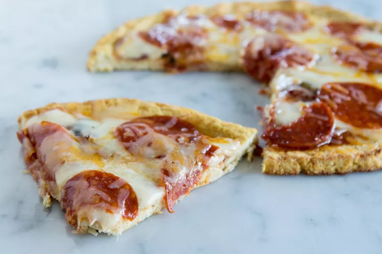

Pizza

Description
A recipe for a nice pizza with a fluffy crust and wonderful toppings.
It is a recipe for 8 servings. The cook time is about 10mins with 10mins of prep time.
Ingredients
- 1 unbaked pizza crust
- 6 tablespoons prepared presto sauce
- 3 roma tomatoes, thinly sliced
- 1 package seasoned goat cheese
- 2 cloves garlic, peeled and thinly sliced
- 1 cup fresh arugula
- 1 teaspoon olive oil
Steps
- Preheat oven according to pizza package instructions
- Put pesto in the center of the Pizza and spread it toward the outer edges.
- Cut the goat cheese and crumble it across the pizza.
- Arrange tomato slices over the goat cheese.
- Sprinkle with garlic.
- Brush the crust edges lightly with olive oil.
- Place the Pizza in the preheated oven rack.
- Wait 5-10min or until the crust edges are golden.
- Take the Pizza out of the oven, let it cool down some minutes.
- Enjoy!